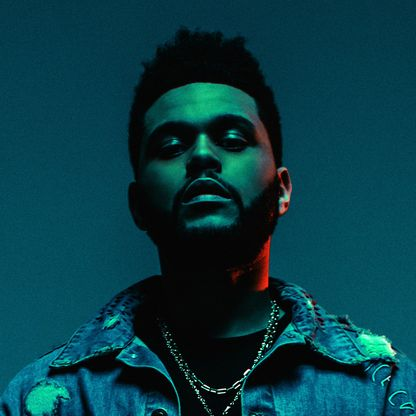

About
Abel Makkonen Tesfaye (born February 16, 1990), known professionally as The Weeknd, is a Canadian singer, songwriter, and record producer.[1] He began his recording career in 2010, anonymously uploading several songs to YouTube. A year later, The Weeknd released the mixtapes House of Balloons, Thursday, and Echoes of Silence, and quickly earned a following and critical recognition from several mainstream publications due to his dark style of R&B and the mystique surrounding his identity. In 2012, The Weeknd signed with Republic Records, and re-released the mixtapes as part of the compilation album Trilogy (2012). He followed it with his debut studio album Kiss Land (2013), and followed that with Beauty Behind the Madness (2015); the latter became a global bestseller, and contained the number-one singles "Can't Feel My Face" and "The Hills". Beauty Behind the Madness also won Best Urban Contemporary Album and was nominated for Album of the Year at the 56th Grammy Awards. The Weeknd's third album, Starboy (2016), spawned similar commercial success, including the number-one single of the same name, while it also won Best Urban Contemporary Album at the 60th Grammy Awards. His fourth album, After Hours (2020), featured the number-one singles "Heartless" and "Blinding Lights".
The Weeknd has won three Grammy Awards, two American Music Awards, nine Billboard Music Awards, nine Juno Awards, and has been nominated for an Academy Award.[4] He holds several chart records, being the first artist to simultaneously hold the top three positions on the Billboard Hot R&B Songs chart with "Can't Feel My Face", "Earned It", and "The Hills". As a businessman, he founded the record label XO in 2012, while his other ventures include fashion design and esports. One of the most successful Canadian recording artists, The Weeknd was awarded the Allan Slaight Award by Canada's Walk of Fame for "making a positive impact in the fields of music, film, literature, visual or performing arts, sports, innovation or philanthropy"